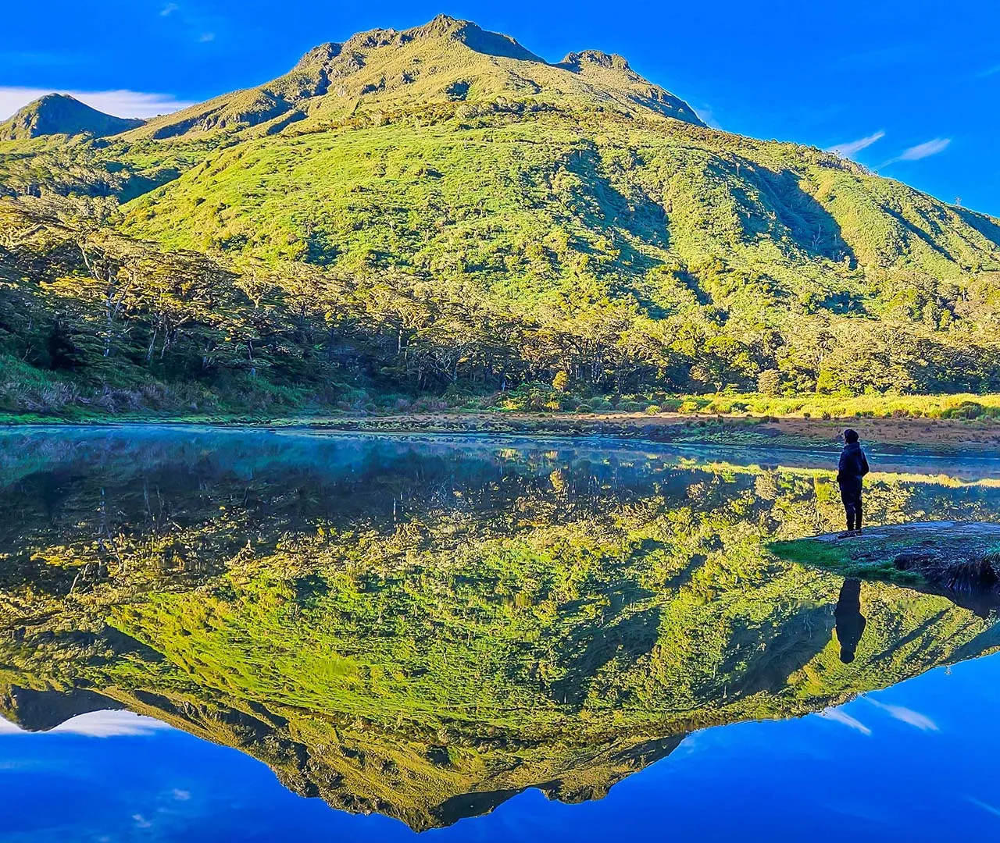

Mt. Apo Highlights


Mt. Apo is the tallest peak in the Philippines, rising at 2,954 meters above sea level. It is a dormant stratovolcano and is often referred to as the “King of Philippine Mountains.” The summit offers breathtaking views of nearby mountain ranges, forests, and volcanic landscapes.
The mountain is covered with lush forests, home to various endemic species like the Philippine eagle. Its slopes feature mossy woods, sulfur vents, and scenic lakes that create a rich hiking experience. It is part of the Mount Apo Natural Park, a protected area preserving biodiversity.
Mt. Apo is also a sacred place for the indigenous tribes in Mindanao. Locals consider the mountain spiritual and often hold rituals in its honor. This cultural importance adds depth to every visitor's journey to the peak.